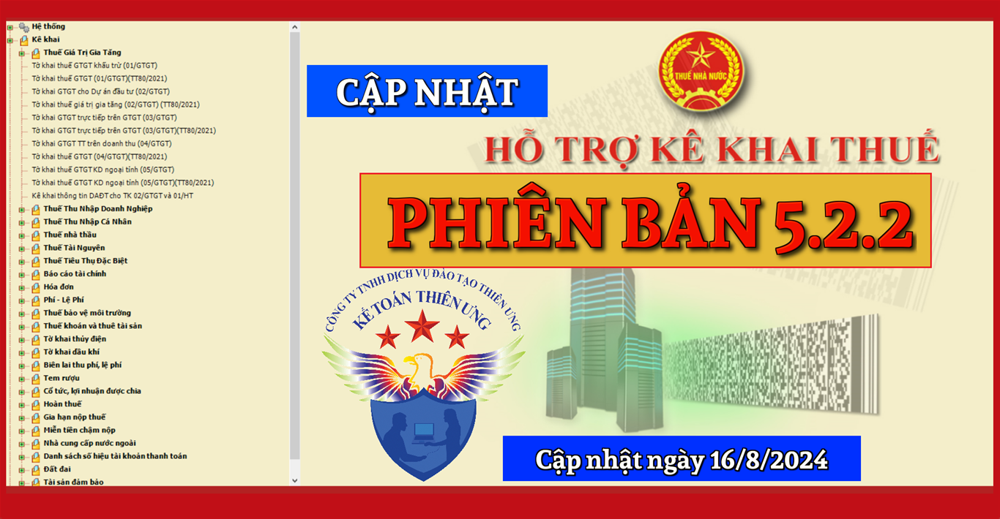
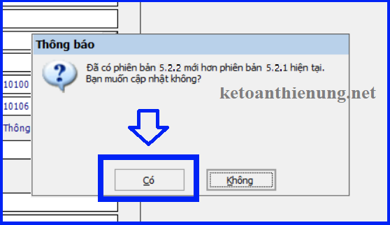
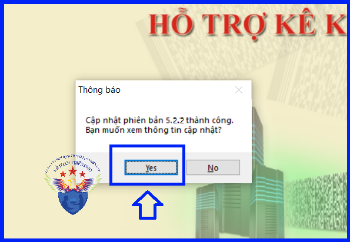

Phần mềm hỗ trợ kê khai thuế 5.2.2 mới nhất ngày 16/8/2024 của Tổng cục thuế. Tải phần mềm HTKK 5.2.2 mới nhất miễn phí tại đây - Phần mềm kê khai thuế mới nhất 2024.

TỔNG CỤC THUẾ THÔNG BÁO
V/v Nâng cấp ứng dụng Hỗ trợ kê khai - HTKK phiên bản 5.2.2 đáp ứng Nghị định 72/2024/NĐ-CP và các Thông tư hỗ trợ tháo gỡ khó khăn
Tổng cục Thuế thông báo nâng cấp ứng dụng Hỗ trợ kê khai - HTKK phiên bản 5.2.2 đáp ứng Nghị định 72/2024/NĐ-CP ngày 30/06/2024 quy định chính sách giảm thuế GTGT theo Nghị quyết số 142/2024/QH15 ngày 29/6/2024 của Quốc Hội và các Thông tư hỗ trợ tháo gỡ khó khăn đồng thời cập nhật một số nội dung phát sinh trong quá trình triển khai HTKK 5.2.1, cụ thể như sau:
I - Nâng cấp các tờ khai phí, lệ phí đáp ứng Thông tư số 63/2023/TT-BTC
- Nâng cấp bổ sung mục “Phí/Lệ phí thu theo Thông tư số 63/2023/TT-BTC” đối với các kỳ kê khai trong khoảng thời gian từ tháng 12/2023 đến tháng 12/2025 đối với các tờ khai:
+ Tờ khai phí – mẫu 01/PH (TT80/2021)
+ Tờ khai quyết toán phí – mẫu 02/PH (TT80/2021)
+ Tờ khai lệ phí – mẫu 01/LP (TT80/2021)
+ Tờ khai quyết toán phí – mẫu 02/PH (TT80/2021)
+ Tờ khai lệ phí – mẫu 01/LP (TT80/2021)
II - Nâng cấp các tờ khai đáp ứng Nghị định số 72/2024/NĐ-CP về giảm thuế GTGT
- Nâng cấp bổ sung Phụ lục giảm thuế giá trị gia tăng theo Nghị quyết số 142/2024/QH15 đối với các tờ khai:
+ Tờ khai thuế giá trị gia tăng – 01/GTGT (TT80/2021): Cho phép đính kèm đối với ngành nghề “Hoạt động sản xuất kinh doanh thông thường” hoặc “Hoạt động thăm dò khai thác dầu khí” hoặc “dành cho nhà máy sản xuất điện khác địa bàn tỉnh nơi có trụ sở chính” có các kỳ tính thuế như sau:
• Kỳ tháng: Từ tháng 07/2024 đến tháng 12/2024
• Kỳ quý: Từ quý 3/2024, quý 4/2024
• Kỳ quý: Từ quý 3/2024, quý 4/2024
+ Tờ khai thuế giá trị gia tăng – 04/GTGT (TT80/2021): Cho phép đính kèm đối với các kỳ tính thuế như sau:
• Nếu không tích chọn <Thu hộ>:
* Kỳ lần phát sinh: Từ ngày 01/07/2024 đến ngày 31/12/2024
* Kỳ tháng: Từ tháng 07/2024 đến tháng 12/2024
* Kỳ quý: Quý 3/2024, quý 4/2024
* Kỳ tháng: Từ tháng 07/2024 đến tháng 12/2024
* Kỳ quý: Quý 3/2024, quý 4/2024
• Nếu tích chọn <Thu hộ>:
* Kỳ tháng: Từ tháng 07/2024 đến tháng 12/2024
* Kỳ quý: Quý 3/2024, quý 4/2024
* Kỳ quý: Quý 3/2024, quý 4/2024
+ Tờ khai thuế đối với hộ kinh doanh, cá nhân kinh doanh – 01/CNKD (TT40/2021): Cho phép đính kèm đối với các kỳ tính thuế như sau:
• Kỳ lần phát sinh: Từ ngày 01/07/2024 đến ngày 31/12/2024
• Kỳ tháng: Từ tháng 07/2024 đến tháng 12/2024
• Kỳ quý: Quý 3/2024, quý 4/2024
• Kỳ tháng: Từ tháng 07/2024 đến tháng 12/2024
• Kỳ quý: Quý 3/2024, quý 4/2024
+ Tờ khai thuế đối với hoạt động cho thuê tài sản – 01/TTS (TT40/2021): Cho phép đính kèm đối với các kỳ tính thuế như sau:
• Tờ khai theo kỳ thanh toán: “Từ kỳ thanh toán” đến “Đến kỳ thanh toán” có giao với khoảng thời gian từ 01/07/2024 đến 31/12/2024
• Kỳ tháng: Từ tháng 07/2024 đến tháng 12/2024
• Kỳ quý: Quý 3/2024, quý 4/2024
• Kỳ tháng: Từ tháng 07/2024 đến tháng 12/2024
• Kỳ quý: Quý 3/2024, quý 4/2024
III - Nâng cấp Tờ khai thuế giá trị gia tăng – 03/GTGT (TT80/2021)
- Bổ sung các chỉ tiêu trên màn hình kê khai:
+ [26a] Giá trị gia tăng chịu thuế của hoạt động xuất khẩu: Nhập kiểu số âm, dương
+ [26b] Giá trị gia tăng chịu thuế của hoạt động tiêu thụ nội địa: Nhập kiểu số âm, dương
+ [27a] Thuế giá trị gia tăng phải nộp của hoạt động xuất khẩu: [27a]=[26a] x 0% = 0
+ [27b] Thuế giá trị gia tăng phải nộp của hoạt động tiêu thụ nội địa: [27b]=[26b] x 10%. Nếu [26b] < 0 thì [27b] =0
- Bổ sung ràng buộc tại chỉ tiêu [26] Giá trị gia tăng chịu thuế trong kỳ: Kiểm tra [26] phải = [26a] + [26b]+ [26b] Giá trị gia tăng chịu thuế của hoạt động tiêu thụ nội địa: Nhập kiểu số âm, dương
+ [27a] Thuế giá trị gia tăng phải nộp của hoạt động xuất khẩu: [27a]=[26a] x 0% = 0
+ [27b] Thuế giá trị gia tăng phải nộp của hoạt động tiêu thụ nội địa: [27b]=[26b] x 10%. Nếu [26b] < 0 thì [27b] =0
- Cập nhật công thức tại chỉ tiêu [27]: [27] =[27a] + [27b]
Bắt đầu từ ngày 16/8/2024, khi lập hồ sơ khai thuế có liên quan đến nội dung nâng cấp nêu trên, tổ chức, cá nhân nộp thuế sẽ sử dụng các chức năng kê khai tại ứng dụng Hỗ trợ kê khai - HTKK 5.2.2 thay cho các phiên bản trước đây.
Tải phần mềm Hỗ trợ kê khai - HTKK 5.2.2 tại đây:

- Hoặc liên hệ trực tiếp với cơ quan thuế địa phương để được cung cấp và hỗ trợ trong quá trình cài đặt, sử dụng.
- Mọi phản ánh, góp ý của tổ chức, cá nhân nộp thuế được gửi đến cơ quan Thuế theo các số điện thoại, hộp thư điện tử hỗ trợ Người nộp thuế - NNT về ứng dụng Hỗ trợ kê khai - HTKK do cơ quan Thuế cung cấp.
Tổng cục Thuế trân trọng thông báo./.
- Hoặc liên hệ trực tiếp với cơ quan thuế địa phương để được cung cấp và hỗ trợ trong quá trình cài đặt, sử dụng.
- Mọi phản ánh, góp ý của tổ chức, cá nhân nộp thuế được gửi đến cơ quan Thuế theo các số điện thoại, hộp thư điện tử hỗ trợ Người nộp thuế - NNT về ứng dụng Hỗ trợ kê khai - HTKK do cơ quan Thuế cung cấp.
Tổng cục Thuế trân trọng thông báo./.
1. Điều kiện cài đặt phần mềm HTKK 5.2.2, máy tính của NNT cần đáp ứng thông số sau:
- Hệ điều hành WinXP (SP2, SP3), Win 7 trở lên… (không hỗ trợ hệ điều hành iOS, Mac).
- Máy tính có cài .NET Framework 3.5 trở lên (nếu chưa có tải bộ cài .NET Framework 3.5 Tại đây).
- Nếu máy tính sử dụng hệ điều hành Win 7 trở lên không phải cài đặt .NET Framework 3.5 mà chỉ cần kích hoạt .NET Framework 3.5 đã tích hợp sẵn: Thì kích hoạt theo tài liệu hướng dẫn cài đặt sau: Tải về


Như vậy là cập nhật xong phần mềm HTKK 5.2.2
Kế toán Diệu Tâm chúc các bạn cập nhật HTKK thành công!
----------------------------------------------------------------------------